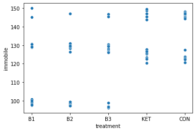
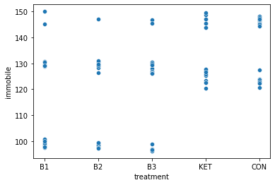

Open Field Test Analysis Demo
Contents
Open Field Test Analysis Demo#
The goal of this notebook is to produce several plots and data tables using the mouse coordinates extracted from video using DeepLabCut
Results include
Distance traveled
Heatmaps (where mice are spending their time)
Representative plots (tracks of mice throughout the video)
Time in inner area (defined as 7cm from wall)
Contact Details
Code author: Andre Telfer (andretelfer@cmail.carleton.ca)
Primary contact: Argel Aguilar-Valles (Argel.AguilaValles@Carleton.ca)
Associated Lab: https://carleton.ca/neuroscience/profile/argel-aguilar-valles/
This notebook can be run using the provided docker image, or by manually installing the requires packages. The dataset itself is not yet public.
import pandas as pd
import numpy as np
import matplotlib.pyplot as plt
import cv2
import re
import seaborn as sns
import statsmodels.api as sm
import json
from skimage.draw import polygon
from ruamel.yaml import YAML
from IPython.display import display, HTML, Image
from statsmodels.formula.api import ols
from tqdm import tqdm
from pathlib import Path
from scipy.stats import gaussian_kde
from skimage.transform import resize
plt.rcParams['font.size'] = 16
Data Configuration#
Organization of the datafiles and experiment-specific details
CONFIG_PATH = Path("/home/jovyan/data/oft/v3/config.yaml")
assert CONFIG_PATH.exists()
with open(CONFIG_PATH, 'r') as fp:
config = YAML().load(fp)
! cat {CONFIG_PATH}
# Dataset name
dataset: avlab-inhibitor-oft2
# Relative or global paths to data
videos: videos
dlc-destfolder: mouse-labels
manual-registrations-file: registrations.csv
# Shape of the Open Field Test Box
box-shape:
height: 460
width: 300
# DLC pcutoff
pcutoff: 0.9
# Time cutoff for analysis in seconds
time-cutoff: 600
# Frames per second in each video
fps: 30
# Path to the videos
VIDEO_DIR = CONFIG_PATH.parent / config['videos']
videos = list(sorted(VIDEO_DIR.glob('*.mp4')))
# Path to the DeepLabCut labels
DLC_DESTFOLDER = CONFIG_PATH.parent / config['dlc-destfolder']
# Manual corner registrations (done using Napari)
REGISTRATION_FILE = CONFIG_PATH.parent / config['manual-registrations-file']
# Cutoff time
CUTOFF_TIME = config['time-cutoff'] * config['fps']
# Where the results should go
RESULTS = Path("/home/jovyan/shared/results") / config['dataset']
if not RESULTS.exists():
RESULTS.mkdir(parents=True)
# Points to align the manual registrations with
h = config['box-shape']['height']
w = config['box-shape']['width']
box_shape = [h, w]
ground_truth_box_corners = np.array([
[0, 0],
[0, w],
[h, w],
[h, 0]
], dtype=np.float32)
Load a sample frame from each video#
Here we display what the videos look like before we apply any corrections, note the changes in box position inside each frame. In some cases, the size in the image also changes (e.g. when the camera is further/closer).
def get_frame(video, frame_index):
cap = cv2.VideoCapture(str(video))
cap.set(cv2.CAP_PROP_POS_FRAMES, frame_index)
ret, frame = cap.read()
return np.flip(frame, 2)
columns = int(np.sqrt(len(videos)))
rows = int(np.ceil(len(videos) / columns))
gs = plt.GridSpec(rows, columns)
frame_pos = 60 * 5
frames = [get_frame(video, frame_pos) for video in tqdm(videos, position=0, leave=True, desc="Loading frames")]
# Plot each frame individually
for idx in tqdm(range(len(frames)), position=0, leave=True, desc="Creating individual plots"):
plt.figure(figsize=(8,8))
plt.imshow(frames[idx])
filename, ext = videos[idx].parts[-1].split('.')
savepath = RESULTS / 'reference-plots' / 'original-frames' / f"{filename}.png"
if not savepath.parent.exists():
savepath.parent.mkdir(parents=True)
plt.title(filename)
plt.xlabel("Width [px]")
plt.xlabel("Height [px]")
plt.savefig(savepath)
plt.close()
# Create a summary plot
base_size=5
max_h, max_w, _ = np.max(np.array([frame.shape for frame in frames]), axis=0)
width_height_ratio = max_w/max_h
fig = plt.figure(figsize=(columns*base_size*width_height_ratio, rows*base_size*width_height_ratio))
for idx in tqdm(range(len(frames)), position=0, leave=True, desc="Creating summary plot"):
plt.subplot(gs[idx])
plt.imshow(frames[idx])
filename, ext = videos[idx].parts[-1].split('.')
plt.title(filename)
plt.xlabel("Width [px]")
plt.xlabel("Height [px]")
plt.tight_layout()
plt.savefig(RESULTS / 'all-original-videos.png')
Loading frames: 0%| | 0/110 [00:00<?, ?it/s]
Loading frames: 2%|██▋ | 2/110 [00:00<00:06, 17.94it/s]
Loading frames: 5%|██████▋ | 5/110 [00:00<00:04, 23.93it/s]
Loading frames: 7%|██████████▊ | 8/110 [00:00<00:04, 22.61it/s]
Loading frames: 10%|██████████████▋ | 11/110 [00:00<00:03, 25.00it/s]
Loading frames: 13%|██████████████████▋ | 14/110 [00:00<00:04, 23.73it/s]
Loading frames: 15%|██████████████████████▋ | 17/110 [00:00<00:04, 22.33it/s]
Loading frames: 19%|████████████████████████████ | 21/110 [00:00<00:03, 25.59it/s]
Loading frames: 22%|████████████████████████████████ | 24/110 [00:00<00:03, 24.66it/s]
Loading frames: 25%|█████████████████████████████████████▍ | 28/110 [00:01<00:03, 26.10it/s]
Loading frames: 29%|██████████████████████████████████████████▊ | 32/110 [00:01<00:03, 25.56it/s]
Loading frames: 32%|██████████████████████████████████████████████▊ | 35/110 [00:01<00:02, 25.54it/s]
Loading frames: 35%|██████████████████████████████████████████████████▊ | 38/110 [00:01<00:02, 26.25it/s]
Loading frames: 37%|██████████████████████████████████████████████████████▊ | 41/110 [00:01<00:02, 27.07it/s]
Loading frames: 41%|████████████████████████████████████████████████████████████▏ | 45/110 [00:01<00:02, 28.19it/s]
Loading frames: 44%|████████████████████████████████████████████████████████████████▏ | 48/110 [00:01<00:02, 27.97it/s]
Loading frames: 47%|█████████████████████████████████████████████████████████████████████▍ | 52/110 [00:02<00:02, 28.38it/s]
Loading frames: 51%|██████████████████████████████████████████████████████████████████████████▊ | 56/110 [00:02<00:01, 29.45it/s]
Loading frames: 55%|████████████████████████████████████████████████████████████████████████████████▏ | 60/110 [00:02<00:01, 31.34it/s]
Loading frames: 58%|█████████████████████████████████████████████████████████████████████████████████████▌ | 64/110 [00:02<00:01, 31.00it/s]
Loading frames: 62%|██████████████████████████████████████████████████████████████████████████████████████████▊ | 68/110 [00:02<00:01, 29.14it/s]
Loading frames: 65%|████████████████████████████████████████████████████████████████████████████████████████████████▏ | 72/110 [00:02<00:01, 29.66it/s]
Loading frames: 69%|█████████████████████████████████████████████████████████████████████████████████████████████████████▌ | 76/110 [00:02<00:01, 31.01it/s]
Loading frames: 73%|██████████████████████████████████████████████████████████████████████████████████████████████████████████▉ | 80/110 [00:02<00:00, 32.81it/s]
Loading frames: 76%|████████████████████████████████████████████████████████████████████████████████████████████████████████████████▎ | 84/110 [00:03<00:00, 31.84it/s]
Loading frames: 80%|█████████████████████████████████████████████████████████████████████████████████████████████████████████████████████▌ | 88/110 [00:03<00:00, 32.79it/s]
Loading frames: 84%|██████████████████████████████████████████████████████████████████████████████████████████████████████████████████████████▉ | 92/110 [00:03<00:00, 33.76it/s]
Loading frames: 87%|████████████████████████████████████████████████████████████████████████████████████████████████████████████████████████████████▎ | 96/110 [00:03<00:00, 34.78it/s]
Loading frames: 91%|████████████████████████████████████████████████████████████████████████████████████████████████████████████████████████████████████▋ | 100/110 [00:03<00:00, 34.39it/s]
Loading frames: 95%|██████████████████████████████████████████████████████████████████████████████████████████████████████████████████████████████████████████ | 104/110 [00:03<00:00, 34.89it/s]
Loading frames: 98%|███████████████████████████████████████████████████████████████████████████████████████████████████████████████████████████████████████████████▎ | 108/110 [00:03<00:00, 34.63it/s]
Loading frames: 100%|██████████████████████████████████████████████████████████████████████████████████████████████████████████████████████████████████████████████████| 110/110 [00:03<00:00, 29.20it/s]
Creating individual plots: 0%| | 0/110 [00:00<?, ?it/s]
Creating individual plots: 1%|█▏ | 1/110 [00:00<00:22, 4.82it/s]
Creating individual plots: 2%|██▍ | 2/110 [00:00<00:18, 5.79it/s]
Creating individual plots: 3%|███▋ | 3/110 [00:00<00:16, 6.43it/s]
Creating individual plots: 4%|████▉ | 4/110 [00:00<00:17, 6.08it/s]
Creating individual plots: 5%|██████▏ | 5/110 [00:00<00:16, 6.22it/s]
Creating individual plots: 5%|███████▍ | 6/110 [00:00<00:15, 6.56it/s]
Creating individual plots: 6%|████████▋ | 7/110 [00:01<00:18, 5.52it/s]
Creating individual plots: 7%|█████████▉ | 8/110 [00:01<00:17, 5.72it/s]
Creating individual plots: 8%|███████████▏ | 9/110 [00:01<00:16, 6.07it/s]
Creating individual plots: 9%|████████████▎ | 10/110 [00:01<00:15, 6.63it/s]
Creating individual plots: 10%|█████████████▌ | 11/110 [00:01<00:15, 6.40it/s]
Creating individual plots: 11%|██████████████▊ | 12/110 [00:01<00:15, 6.17it/s]
Creating individual plots: 12%|████████████████ | 13/110 [00:02<00:15, 6.40it/s]
Creating individual plots: 13%|█████████████████▎ | 14/110 [00:02<00:14, 6.66it/s]
Creating individual plots: 14%|██████████████████▌ | 15/110 [00:02<00:14, 6.72it/s]
Creating individual plots: 15%|███████████████████▊ | 16/110 [00:02<00:14, 6.52it/s]
Creating individual plots: 15%|█████████████████████ | 17/110 [00:02<00:15, 6.19it/s]
Creating individual plots: 16%|██████████████████████▎ | 18/110 [00:02<00:14, 6.35it/s]
Creating individual plots: 17%|███████████████████████▍ | 19/110 [00:03<00:13, 6.64it/s]
Creating individual plots: 18%|████████████████████████▋ | 20/110 [00:03<00:13, 6.47it/s]
Creating individual plots: 19%|█████████████████████████▉ | 21/110 [00:03<00:13, 6.69it/s]
Creating individual plots: 20%|███████████████████████████▏ | 22/110 [00:03<00:12, 6.80it/s]
Creating individual plots: 21%|████████████████████████████▍ | 23/110 [00:03<00:13, 6.60it/s]
Creating individual plots: 22%|█████████████████████████████▋ | 24/110 [00:03<00:13, 6.16it/s]
Creating individual plots: 23%|██████████████████████████████▉ | 25/110 [00:03<00:13, 6.53it/s]
Creating individual plots: 24%|████████████████████████████████▏ | 26/110 [00:04<00:12, 6.70it/s]
Creating individual plots: 25%|█████████████████████████████████▍ | 27/110 [00:04<00:15, 5.41it/s]
Creating individual plots: 25%|██████████████████████████████████▌ | 28/110 [00:04<00:14, 5.62it/s]
Creating individual plots: 26%|███████████████████████████████████▊ | 29/110 [00:04<00:13, 6.15it/s]
Creating individual plots: 27%|█████████████████████████████████████ | 30/110 [00:04<00:12, 6.44it/s]
Creating individual plots: 28%|██████████████████████████████████████▎ | 31/110 [00:04<00:12, 6.39it/s]
Creating individual plots: 29%|███████████████████████████████████████▌ | 32/110 [00:05<00:12, 6.16it/s]
Creating individual plots: 30%|████████████████████████████████████████▊ | 33/110 [00:05<00:11, 6.67it/s]
Creating individual plots: 31%|██████████████████████████████████████████ | 34/110 [00:05<00:11, 6.77it/s]
Creating individual plots: 32%|███████████████████████████████████████████▎ | 35/110 [00:05<00:11, 6.26it/s]
Creating individual plots: 33%|████████████████████████████████████████████▌ | 36/110 [00:05<00:11, 6.24it/s]
Creating individual plots: 34%|█████████████████████████████████████████████▋ | 37/110 [00:05<00:11, 6.45it/s]
Creating individual plots: 35%|██████████████████████████████████████████████▉ | 38/110 [00:06<00:11, 6.38it/s]
Creating individual plots: 35%|████████████████████████████████████████████████▏ | 39/110 [00:06<00:11, 6.09it/s]
Creating individual plots: 36%|█████████████████████████████████████████████████▍ | 40/110 [00:06<00:10, 6.56it/s]
Creating individual plots: 37%|██████████████████████████████████████████████████▋ | 41/110 [00:06<00:09, 6.99it/s]
Creating individual plots: 38%|███████████████████████████████████████████████████▉ | 42/110 [00:06<00:09, 6.97it/s]
Creating individual plots: 39%|█████████████████████████████████████████████████████▏ | 43/110 [00:06<00:09, 6.75it/s]
Creating individual plots: 40%|██████████████████████████████████████████████████████▍ | 44/110 [00:06<00:10, 6.34it/s]
Creating individual plots: 41%|███████████████████████████████████████████████████████▋ | 45/110 [00:07<00:10, 6.44it/s]
Creating individual plots: 42%|████████████████████████████████████████████████████████▊ | 46/110 [00:07<00:09, 6.69it/s]
Creating individual plots: 43%|██████████████████████████████████████████████████████████ | 47/110 [00:07<00:09, 6.56it/s]
Creating individual plots: 44%|███████████████████████████████████████████████████████████▎ | 48/110 [00:07<00:09, 6.23it/s]
Creating individual plots: 45%|████████████████████████████████████████████████████████████▌ | 49/110 [00:07<00:09, 6.37it/s]
Creating individual plots: 45%|█████████████████████████████████████████████████████████████▊ | 50/110 [00:07<00:09, 6.63it/s]
Creating individual plots: 46%|███████████████████████████████████████████████████████████████ | 51/110 [00:08<00:10, 5.40it/s]
Creating individual plots: 47%|████████████████████████████████████████████████████████████████▎ | 52/110 [00:08<00:10, 5.41it/s]
Creating individual plots: 48%|█████████████████████████████████████████████████████████████████▌ | 53/110 [00:08<00:10, 5.45it/s]
Creating individual plots: 49%|██████████████████████████████████████████████████████████████████▊ | 54/110 [00:08<00:09, 5.82it/s]
Creating individual plots: 50%|████████████████████████████████████████████████████████████████████ | 55/110 [00:08<00:08, 6.23it/s]
Creating individual plots: 51%|█████████████████████████████████████████████████████████████████████▏ | 56/110 [00:08<00:08, 6.20it/s]
Creating individual plots: 52%|██████████████████████████████████████████████████████████████████████▍ | 57/110 [00:09<00:07, 6.65it/s]
Creating individual plots: 53%|███████████████████████████████████████████████████████████████████████▋ | 58/110 [00:09<00:07, 6.90it/s]
Creating individual plots: 54%|████████████████████████████████████████████████████████████████████████▉ | 59/110 [00:09<00:07, 7.23it/s]
Creating individual plots: 55%|██████████████████████████████████████████████████████████████████████████▏ | 60/110 [00:09<00:06, 7.15it/s]
Creating individual plots: 55%|███████████████████████████████████████████████████████████████████████████▍ | 61/110 [00:09<00:06, 7.64it/s]
Creating individual plots: 56%|████████████████████████████████████████████████████████████████████████████▋ | 62/110 [00:09<00:06, 7.63it/s]
Creating individual plots: 57%|█████████████████████████████████████████████████████████████████████████████▉ | 63/110 [00:09<00:06, 7.42it/s]
Creating individual plots: 58%|███████████████████████████████████████████████████████████████████████████████▏ | 64/110 [00:09<00:06, 7.55it/s]
Creating individual plots: 59%|████████████████████████████████████████████████████████████████████████████████▎ | 65/110 [00:10<00:05, 7.98it/s]
Creating individual plots: 60%|█████████████████████████████████████████████████████████████████████████████████▌ | 66/110 [00:10<00:05, 8.02it/s]
Creating individual plots: 61%|██████████████████████████████████████████████████████████████████████████████████▊ | 67/110 [00:10<00:05, 7.68it/s]
Creating individual plots: 62%|████████████████████████████████████████████████████████████████████████████████████ | 68/110 [00:10<00:05, 7.39it/s]
Creating individual plots: 63%|█████████████████████████████████████████████████████████████████████████████████████▎ | 69/110 [00:10<00:05, 7.77it/s]
Creating individual plots: 64%|██████████████████████████████████████████████████████████████████████████████████████▌ | 70/110 [00:10<00:04, 8.01it/s]
Creating individual plots: 65%|███████████████████████████████████████████████████████████████████████████████████████▊ | 71/110 [00:10<00:05, 7.80it/s]
Creating individual plots: 65%|█████████████████████████████████████████████████████████████████████████████████████████ | 72/110 [00:10<00:05, 7.52it/s]
Creating individual plots: 66%|██████████████████████████████████████████████████████████████████████████████████████████▎ | 73/110 [00:11<00:05, 7.38it/s]
Creating individual plots: 67%|███████████████████████████████████████████████████████████████████████████████████████████▍ | 74/110 [00:11<00:04, 7.37it/s]
Creating individual plots: 68%|████████████████████████████████████████████████████████████████████████████████████████████▋ | 75/110 [00:11<00:04, 7.84it/s]
Creating individual plots: 69%|█████████████████████████████████████████████████████████████████████████████████████████████▉ | 76/110 [00:11<00:04, 7.82it/s]
Creating individual plots: 70%|███████████████████████████████████████████████████████████████████████████████████████████████▏ | 77/110 [00:11<00:04, 7.56it/s]
Creating individual plots: 71%|████████████████████████████████████████████████████████████████████████████████████████████████▍ | 78/110 [00:11<00:04, 7.60it/s]
Creating individual plots: 72%|█████████████████████████████████████████████████████████████████████████████████████████████████▋ | 79/110 [00:11<00:03, 8.09it/s]
Creating individual plots: 73%|██████████████████████████████████████████████████████████████████████████████████████████████████▉ | 80/110 [00:12<00:03, 8.00it/s]
Creating individual plots: 74%|████████████████████████████████████████████████████████████████████████████████████████████████████▏ | 81/110 [00:12<00:04, 5.85it/s]
Creating individual plots: 75%|█████████████████████████████████████████████████████████████████████████████████████████████████████▍ | 82/110 [00:12<00:04, 6.26it/s]
Creating individual plots: 75%|██████████████████████████████████████████████████████████████████████████████████████████████████████▌ | 83/110 [00:12<00:03, 6.80it/s]
Creating individual plots: 76%|███████████████████████████████████████████████████████████████████████████████████████████████████████▊ | 84/110 [00:12<00:03, 6.93it/s]
Creating individual plots: 77%|█████████████████████████████████████████████████████████████████████████████████████████████████████████ | 85/110 [00:12<00:03, 6.94it/s]
Creating individual plots: 78%|██████████████████████████████████████████████████████████████████████████████████████████████████████████▎ | 86/110 [00:12<00:03, 7.04it/s]
Creating individual plots: 79%|███████████████████████████████████████████████████████████████████████████████████████████████████████████▌ | 87/110 [00:13<00:03, 7.53it/s]
Creating individual plots: 80%|████████████████████████████████████████████████████████████████████████████████████████████████████████████▊ | 88/110 [00:13<00:02, 7.68it/s]
Creating individual plots: 81%|██████████████████████████████████████████████████████████████████████████████████████████████████████████████ | 89/110 [00:13<00:02, 7.72it/s]
Creating individual plots: 82%|███████████████████████████████████████████████████████████████████████████████████████████████████████████████▎ | 90/110 [00:13<00:02, 7.41it/s]
Creating individual plots: 83%|████████████████████████████████████████████████████████████████████████████████████████████████████████████████▌ | 91/110 [00:13<00:02, 7.84it/s]
Creating individual plots: 84%|█████████████████████████████████████████████████████████████████████████████████████████████████████████████████▋ | 92/110 [00:13<00:02, 7.75it/s]
Creating individual plots: 85%|██████████████████████████████████████████████████████████████████████████████████████████████████████████████████▉ | 93/110 [00:13<00:02, 7.58it/s]
Creating individual plots: 85%|████████████████████████████████████████████████████████████████████████████████████████████████████████████████████▏ | 94/110 [00:14<00:02, 7.24it/s]
Creating individual plots: 86%|█████████████████████████████████████████████████████████████████████████████████████████████████████████████████████▍ | 95/110 [00:14<00:01, 7.57it/s]
Creating individual plots: 87%|██████████████████████████████████████████████████████████████████████████████████████████████████████████████████████▋ | 96/110 [00:14<00:01, 7.57it/s]
Creating individual plots: 88%|███████████████████████████████████████████████████████████████████████████████████████████████████████████████████████▉ | 97/110 [00:14<00:01, 7.42it/s]
Creating individual plots: 89%|█████████████████████████████████████████████████████████████████████████████████████████████████████████████████████████▏ | 98/110 [00:14<00:01, 7.42it/s]
Creating individual plots: 90%|██████████████████████████████████████████████████████████████████████████████████████████████████████████████████████████▍ | 99/110 [00:14<00:01, 7.72it/s]
Creating individual plots: 91%|██████████████████████████████████████████████████████████████████████████████████████████████████████████████████████████▋ | 100/110 [00:14<00:01, 7.63it/s]
Creating individual plots: 92%|███████████████████████████████████████████████████████████████████████████████████████████████████████████████████████████▉ | 101/110 [00:14<00:01, 7.39it/s]
Creating individual plots: 93%|█████████████████████████████████████████████████████████████████████████████████████████████████████████████████████████████▏ | 102/110 [00:15<00:01, 7.49it/s]
Creating individual plots: 94%|██████████████████████████████████████████████████████████████████████████████████████████████████████████████████████████████▍ | 103/110 [00:15<00:00, 7.71it/s]
Creating individual plots: 95%|███████████████████████████████████████████████████████████████████████████████████████████████████████████████████████████████▋ | 104/110 [00:15<00:00, 8.01it/s]
Creating individual plots: 95%|████████████████████████████████████████████████████████████████████████████████████████████████████████████████████████████████▊ | 105/110 [00:15<00:00, 8.05it/s]
Creating individual plots: 96%|██████████████████████████████████████████████████████████████████████████████████████████████████████████████████████████████████ | 106/110 [00:15<00:00, 7.81it/s]
Creating individual plots: 97%|███████████████████████████████████████████████████████████████████████████████████████████████████████████████████████████████████▎ | 107/110 [00:15<00:00, 8.05it/s]
Creating individual plots: 98%|████████████████████████████████████████████████████████████████████████████████████████████████████████████████████████████████████▌ | 108/110 [00:15<00:00, 7.92it/s]
Creating individual plots: 99%|█████████████████████████████████████████████████████████████████████████████████████████████████████████████████████████████████████▊ | 109/110 [00:15<00:00, 7.82it/s]
Creating individual plots: 100%|███████████████████████████████████████████████████████████████████████████████████████████████████████████████████████████████████████| 110/110 [00:16<00:00, 7.43it/s]
Creating individual plots: 100%|███████████████████████████████████████████████████████████████████████████████████████████████████████████████████████████████████████| 110/110 [00:16<00:00, 6.84it/s]
Creating summary plot: 0%| | 0/110 [00:00<?, ?it/s]
Creating summary plot: 6%|████████▉ | 7/110 [00:00<00:01, 58.98it/s]
Creating summary plot: 12%|████████████████▌ | 13/110 [00:00<00:03, 29.98it/s]
Creating summary plot: 18%|█████████████████████████▍ | 20/110 [00:00<00:02, 39.69it/s]
Creating summary plot: 25%|██████████████████████████████████▎ | 27/110 [00:00<00:01, 46.39it/s]
Creating summary plot: 31%|███████████████████████████████████████████▎ | 34/110 [00:00<00:01, 51.21it/s]
Creating summary plot: 36%|██████████████████████████████████████████████████▉ | 40/110 [00:00<00:01, 53.26it/s]
Creating summary plot: 42%|██████████████████████████████████████████████████████████▌ | 46/110 [00:00<00:01, 55.12it/s]
Creating summary plot: 47%|██████████████████████████████████████████████████████████████████▏ | 52/110 [00:01<00:01, 55.25it/s]
Creating summary plot: 54%|███████████████████████████████████████████████████████████████████████████ | 59/110 [00:01<00:00, 57.69it/s]
Creating summary plot: 61%|█████████████████████████████████████████████████████████████████████████████████████▎ | 67/110 [00:01<00:00, 61.91it/s]
Creating summary plot: 67%|██████████████████████████████████████████████████████████████████████████████████████████████▏ | 74/110 [00:01<00:00, 63.29it/s]
Creating summary plot: 75%|████████████████████████████████████████████████████████████████████████████████████████████████████████▎ | 82/110 [00:01<00:00, 65.59it/s]
Creating summary plot: 82%|██████████████████████████████████████████████████████████████████████████████████████████████████████████████████▌ | 90/110 [00:01<00:00, 38.98it/s]
Creating summary plot: 88%|███████████████████████████████████████████████████████████████████████████████████████████████████████████████████████████▍ | 97/110 [00:01<00:00, 44.55it/s]
Creating summary plot: 95%|████████████████████████████████████████████████████████████████████████████████████████████████████████████████████████████████████▋ | 105/110 [00:02<00:00, 50.32it/s]
Creating summary plot: 100%|███████████████████████████████████████████████████████████████████████████████████████████████████████████████████████████████████████████| 110/110 [00:02<00:00, 50.86it/s]
---------------------------------------------------------------------------
KeyboardInterrupt Traceback (most recent call last)
Input In [5], in <cell line: 44>()
41 plt.xlabel("Height [px]")
43 plt.tight_layout()
---> 44 plt.savefig(RESULTS / 'all-original-videos.png')
File /opt/conda/lib/python3.10/site-packages/matplotlib/pyplot.py:980, in savefig(*args, **kwargs)
978 fig = gcf()
979 res = fig.savefig(*args, **kwargs)
--> 980 fig.canvas.draw_idle() # need this if 'transparent=True' to reset colors
981 return res
File /opt/conda/lib/python3.10/site-packages/matplotlib/backend_bases.py:2060, in FigureCanvasBase.draw_idle(self, *args, **kwargs)
2058 if not self._is_idle_drawing:
2059 with self._idle_draw_cntx():
-> 2060 self.draw(*args, **kwargs)
File /opt/conda/lib/python3.10/site-packages/matplotlib/backends/backend_agg.py:436, in FigureCanvasAgg.draw(self)
432 # Acquire a lock on the shared font cache.
433 with RendererAgg.lock, \
434 (self.toolbar._wait_cursor_for_draw_cm() if self.toolbar
435 else nullcontext()):
--> 436 self.figure.draw(self.renderer)
437 # A GUI class may be need to update a window using this draw, so
438 # don't forget to call the superclass.
439 super().draw()
File /opt/conda/lib/python3.10/site-packages/matplotlib/artist.py:73, in _finalize_rasterization.<locals>.draw_wrapper(artist, renderer, *args, **kwargs)
71 @wraps(draw)
72 def draw_wrapper(artist, renderer, *args, **kwargs):
---> 73 result = draw(artist, renderer, *args, **kwargs)
74 if renderer._rasterizing:
75 renderer.stop_rasterizing()
File /opt/conda/lib/python3.10/site-packages/matplotlib/artist.py:50, in allow_rasterization.<locals>.draw_wrapper(artist, renderer)
47 if artist.get_agg_filter() is not None:
48 renderer.start_filter()
---> 50 return draw(artist, renderer)
51 finally:
52 if artist.get_agg_filter() is not None:
File /opt/conda/lib/python3.10/site-packages/matplotlib/figure.py:2837, in Figure.draw(self, renderer)
2834 # ValueError can occur when resizing a window.
2836 self.patch.draw(renderer)
-> 2837 mimage._draw_list_compositing_images(
2838 renderer, self, artists, self.suppressComposite)
2840 for sfig in self.subfigs:
2841 sfig.draw(renderer)
File /opt/conda/lib/python3.10/site-packages/matplotlib/image.py:132, in _draw_list_compositing_images(renderer, parent, artists, suppress_composite)
130 if not_composite or not has_images:
131 for a in artists:
--> 132 a.draw(renderer)
133 else:
134 # Composite any adjacent images together
135 image_group = []
File /opt/conda/lib/python3.10/site-packages/matplotlib/artist.py:50, in allow_rasterization.<locals>.draw_wrapper(artist, renderer)
47 if artist.get_agg_filter() is not None:
48 renderer.start_filter()
---> 50 return draw(artist, renderer)
51 finally:
52 if artist.get_agg_filter() is not None:
File /opt/conda/lib/python3.10/site-packages/matplotlib/axes/_base.py:3091, in _AxesBase.draw(self, renderer)
3088 a.draw(renderer)
3089 renderer.stop_rasterizing()
-> 3091 mimage._draw_list_compositing_images(
3092 renderer, self, artists, self.figure.suppressComposite)
3094 renderer.close_group('axes')
3095 self.stale = False
File /opt/conda/lib/python3.10/site-packages/matplotlib/image.py:132, in _draw_list_compositing_images(renderer, parent, artists, suppress_composite)
130 if not_composite or not has_images:
131 for a in artists:
--> 132 a.draw(renderer)
133 else:
134 # Composite any adjacent images together
135 image_group = []
File /opt/conda/lib/python3.10/site-packages/matplotlib/artist.py:50, in allow_rasterization.<locals>.draw_wrapper(artist, renderer)
47 if artist.get_agg_filter() is not None:
48 renderer.start_filter()
---> 50 return draw(artist, renderer)
51 finally:
52 if artist.get_agg_filter() is not None:
File /opt/conda/lib/python3.10/site-packages/matplotlib/image.py:646, in _ImageBase.draw(self, renderer, *args, **kwargs)
644 renderer.draw_image(gc, l, b, im, trans)
645 else:
--> 646 im, l, b, trans = self.make_image(
647 renderer, renderer.get_image_magnification())
648 if im is not None:
649 renderer.draw_image(gc, l, b, im)
File /opt/conda/lib/python3.10/site-packages/matplotlib/image.py:956, in AxesImage.make_image(self, renderer, magnification, unsampled)
953 transformed_bbox = TransformedBbox(bbox, trans)
954 clip = ((self.get_clip_box() or self.axes.bbox) if self.get_clip_on()
955 else self.figure.bbox)
--> 956 return self._make_image(self._A, bbox, transformed_bbox, clip,
957 magnification, unsampled=unsampled)
File /opt/conda/lib/python3.10/site-packages/matplotlib/image.py:553, in _ImageBase._make_image(self, A, in_bbox, out_bbox, clip_bbox, magnification, unsampled, round_to_pixel_border)
551 A = self.to_rgba(A)
552 if A.shape[2] == 3:
--> 553 A = _rgb_to_rgba(A)
554 alpha = self._get_scalar_alpha()
555 output_alpha = _resample( # resample alpha channel
556 self, A[..., 3], out_shape, t, alpha=alpha)
KeyboardInterrupt:
Visualize Manual Corner Registrations#
Here we plot the manually registered corners, which were done using napari, over the image.
registration_df = pd.read_csv(REGISTRATION_FILE)
registration_df = registration_df.rename(columns={'axis-1': 'y', 'axis-2': 'x'})
registration_groups = registration_df.groupby('id')
# Plot each frame individually
for idx in tqdm(range(len(frames)), position=0, leave=True, desc="Creating individual plots"):
plt.figure(figsize=(8,8))
plt.imshow(frames[idx])
filename, ext = videos[idx].parts[-1].split('.')
src = registration_groups.get_group(filename)[['x', 'y']].values.astype(np.float32)
poly = plt.Polygon(src, alpha=0.3)
plt.gca().add_patch(poly)
savepath = RESULTS / 'reference-plots' / 'registration' / f"{filename}.png"
if not savepath.parent.exists():
savepath.parent.mkdir(parents=True)
plt.title(filename)
plt.savefig(savepath)
plt.close()
# Create a summary plot
base_size=5
fig = plt.figure(figsize=(columns*base_size*width_height_ratio, rows*base_size*width_height_ratio))
plt.suptitle("Video Registrations")
for idx in tqdm(range(len(frames)), position=0, leave=True, desc="Creating summary plot"):
plt.subplot(gs[idx])
plt.imshow(frames[idx])
filename, ext = videos[idx].parts[-1].split('.')
src = registration_groups.get_group(filename)[['x', 'y']].values.astype(np.float32)
poly = plt.Polygon(src, alpha=0.5)
plt.gca().add_patch(poly)
plt.title(filename)
plt.tight_layout()
plt.savefig(RESULTS / 'all-registrations.png')
Creating individual plots: 100%|███████████████████████████| 110/110 [00:17<00:00, 6.36it/s]
Creating summary plot: 100%|███████████████████████████████| 110/110 [00:01<00:00, 63.36it/s]

Show Corrected Frames#
Here we normalize the videos using the registered points. Notice that the position of the box inside the videos now appears to match up, and all of the boxes appear to be the same size.
def get_perspective_transform(video):
filename, ext = video.parts[-1].split('.')
src = registration_groups.get_group(filename)[['x', 'y']].values.astype(np.float32)
M = cv2.getPerspectiveTransform(src, ground_truth_box_corners)
return M
def create_video_grid(videos, scale=0.5, frame_pos=900):
"""Aggregate a VideoSet into a single summary image"""
columns = int(np.sqrt(len(videos)))
rows = int(np.ceil(len(videos) / columns))
frames = []
for video in tqdm(videos, position=0, leave=True, desc="Loading frames"):
M = get_perspective_transform(video)
frames.append(get_corrected_frame(video, frame_pos, M))
# Find the homogeneous transforms
homogeneous_transforms = []
for idx in tqdm(range(len(frames)), position=0, leave=True, desc="Find homogeneous transforms"):
M = get_perspective_transform(videos[idx])
homogeneous_transforms.append(M)
# Correct the frames
corrected_frames = []
for idx in tqdm(range(len(frames)), position=0, leave=True, desc="Correct frames"):
frame = frames[idx]
M = homogeneous_transforms[idx]
corrected_frames.append(cv2.warpPerspective(frame, M, box_shape))
# Plot each frame individually
for idx in tqdm(range(len(frames)), position=0, leave=True, desc="Creating individual plots"):
plt.figure(figsize=(8,8))
plt.imshow(corrected_frames[idx])
savepath = RESULTS / 'reference-plots' / 'corrected-frames-with-tracks' / f"{filename}.png"
if not savepath.parent.exists():
savepath.parent.mkdir(parents=True)
plt.xlabel("Width [mm]")
plt.ylabel("Height [mm]")
plt.title(filename)
plt.savefig(savepath)
plt.close()
# Create a summary plot
base_size=5
width_height_ratio = w/h
fig = plt.figure(figsize=(columns*base_size*width_height_ratio, rows*base_size*width_height_ratio))
for idx in tqdm(range(len(frames)), position=0, leave=True, desc="Creating summary plot"):
plt.subplot(gs[idx])
plt.imshow(corrected_frames[idx])
plt.xlabel("Width [mm]")
plt.ylabel("Height [mm]")
plt.title(filename)
plt.tight_layout()
plt.savefig(RESULTS / 'all-registrations.png')
Find homogeneous transforms: 100%|███████████████████████| 110/110 [00:00<00:00, 2212.44it/s]
Correct frames: 100%|█████████████████████████████████████| 110/110 [00:00<00:00, 245.08it/s]
Creating individual plots: 100%|███████████████████████████| 110/110 [00:10<00:00, 10.35it/s]
Creating summary plot: 100%|███████████████████████████████| 110/110 [00:01<00:00, 68.69it/s]
Transform points#
def transform_dataframe_to_perspective(df, M):
"""Transform the coordinate dataframes to be in the box's frame of reference"""
df = df.copy().dropna()
idx = pd.IndexSlice
x = df.loc[:, idx[:, :, "x"]]
y = df.loc[:, idx[:, :, "y"]]
x = x.stack(dropna=False).stack(dropna=False)
y = y.stack(dropna=False).stack(dropna=False)
tx, ty, v = M @ np.c_[x, y, np.ones_like(x)].T
tx = tx / v
ty = ty / v
tx = pd.DataFrame(tx, index=x.index, columns=x.columns).unstack().unstack()
ty = pd.DataFrame(ty, index=y.index, columns=y.columns).unstack().unstack()
# Update multi index columns to match
df.loc[:, pd.IndexSlice[:, :, "x"]] = tx
df.loc[:, pd.IndexSlice[:, :, "y"]] = ty
return df
def remove_low_confidence_points(df):
low_confidence = df.xs("likelihood", level="coords", axis=1) < config['pcutoff']
return df.where(~low_confidence)
def get_df(video):
filename, ext = video.parts[-1].split('.')
dlc_file = next(DLC_DESTFOLDER.glob(f"{filename}DLC*.h5"))
df = pd.read_hdf(dlc_file)
return df
def plot_tracks(frame, centroid, filename):
plt.imshow(frame)
c = np.arange(centroid.shape[0])
plt.scatter(centroid.x, centroid.y, c=c, s=1)
w, h = box_shape
plt.xlim(0, w)
plt.ylim(0, h)
plt.xlabel("Height [mm]")
plt.ylabel("Width [mm]")
plt.title(filename)
# Plot each frame individually
for idx in tqdm(range(len(frames)), position=0, leave=True, desc="Creating individual plots"):
M = homogeneous_transforms[idx]
df = get_df(videos[idx])
df = remove_low_confidence_points(df)
df = transform_dataframe_to_perspective(df, M)
centroid = df.groupby(level='coords', axis=1).mean()[['x', 'y']]
filename, ext = videos[idx].parts[-1].split('.')
plt.imshow(corrected_frames[idx])
c = np.arange(centroid.shape[0])
plt.scatter(centroid.x, centroid.y, c=c, s=1)
w, h = box_shape
plt.xlim(0, w)
plt.ylim(0, h)
plt.ylabel("Height [mm]")
plt.xlabel("Width [mm]")
plt.title(filename)
savepath = RESULTS / 'reference-plots' / 'corrected-frames' / f"{filename}.png"
if not savepath.parent.exists():
savepath.parent.mkdir(parents=True)
plt.title(filename)
plt.savefig(savepath)
plt.close()
# Create a summary plot
base_size=5
fig = plt.figure(figsize=(columns*base_size*width_height_ratio, rows*base_size*width_height_ratio))
for idx in tqdm(range(len(frames)), position=0, leave=True, desc="Creating summary plot"):
plt.subplot(gs[idx])
M = homogeneous_transforms[idx]
df = get_df(videos[idx])
df = remove_low_confidence_points(df)
df = transform_dataframe_to_perspective(df, M)
centroid = df.groupby(level='coords', axis=1).mean()[['x', 'y']]
filename, ext = videos[idx].parts[-1].split('.')
plt.imshow(corrected_frames[idx])
c = np.arange(centroid.shape[0])
plt.scatter(centroid.x, centroid.y, c=c, s=1)
w, h = box_shape
plt.xlim(0, w)
plt.ylim(0, h)
plt.ylabel("Height [mm]")
plt.xlabel("Width [mm]")
plt.title(filename)
plt.tight_layout()
plt.savefig(RESULTS / 'all-registrations.png')
Creating individual plots: 100%|███████████████████████████| 110/110 [00:36<00:00, 3.05it/s]
Creating summary plot: 100%|███████████████████████████████| 110/110 [00:09<00:00, 11.48it/s]

Get Distances#
filename
'female_g10_B1'
rows = []
for idx in tqdm(range(len(videos))):
video = videos[idx]
M = homogeneous_transforms[idx]
df = get_df(video)
df = remove_low_confidence_points(df)
df = transform_dataframe_to_perspective(df, M)
centroid = df.groupby(level='coords', axis=1).mean()[['x', 'y']]
centroid = centroid.iloc[:CUTOFF_TIME] # Crop for time
deltas = centroid.diff().dropna()
distance = np.sum(np.linalg.norm(deltas.values, axis=1))
filename, ext = video.parts[-1].split('.')
m = re.match("(?P<sex>\w+)\_g(?P<group>\d+)\_(?P<treatment>\w+)", filename)
rows.append({
'id': filename,
'distance': distance,
**m.groupdict()
})
distances = pd.DataFrame(rows)
distances.to_csv(RESULTS / 'distances.csv', index=False)
distances.sample(3)
100%|██████████████████████████████████████████████████████| 110/110 [00:08<00:00, 12.97it/s]
| id | distance | sex | group | treatment | |
|---|---|---|---|---|---|
| 70 | male_g13_CON | 48300.866131 | male | 13 | CON |
| 21 | female_g1_B2 | 36570.362666 | female | 1 | B2 |
| 89 | male_g4_CON | 36465.949887 | male | 4 | CON |
Quick data look#
ANOVA plot (*assumptions such as distribution shape or homogeneity not checked here)
for sex in ['male', 'female']:
display(HTML(f"<h2>{sex}</h2>"))
sns.barplot(data=distances[distances.sex==sex], x='treatment', y='distance')
plt.show()
sns.scatterplot(data=distances[distances.sex==sex], x='treatment', y='distance')
plt.show()
model = ols('distance ~ C(treatment)', data=distances[distances.sex==sex]).fit()
aov_table = sm.stats.anova_lm(model, typ=2)
display(aov_table)
male
| sum_sq | df | F | PR(>F) | |
|---|---|---|---|---|
| C(treatment) | 2.272908e+08 | 4.0 | 1.247126 | 0.30349 |
| Residual | 2.232582e+09 | 49.0 | NaN | NaN |
female
| sum_sq | df | F | PR(>F) | |
|---|---|---|---|---|
| C(treatment) | 1.602745e+09 | 5.0 | 5.230721 | 0.000613 |
| Residual | 3.064100e+09 | 50.0 | NaN | NaN |
Heatmaps#
video_info = []
for video in videos:
filename, ext = video.parts[-1].split('.')
m = re.match("(?P<sex>\w+)\_g(?P<group>\d+)\_(?P<treatment>\w+)", filename)
video_info.append({
'id': filename,
'video': video,
**m.groupdict()
})
treatment_df = pd.DataFrame(video_info)
mgrid = np.mgrid[:h, :w]
def get_kde(df, sample_every=1):
data = df.T.values
data = data[:,::sample_every]
k = gaussian_kde(data)
z = k(mgrid.reshape(2, -1))
return z
result = {}
for group_idx, group in treatment_df.groupby(['treatment', 'sex']):
dfs = []
for idx, row in tqdm(group.iterrows(), total=group.shape[0], desc='/'.join(group_idx)):
video = row.video
M = get_perspective_transform(video)
df = get_df(video)
df = remove_low_confidence_points(df)
df = transform_dataframe_to_perspective(df, M)
centroid = df.groupby(level='coords', axis=1).mean()[['y', 'x']]
centroid = centroid.iloc[:CUTOFF_TIME]
dfs.append(centroid)
df = pd.concat(dfs)
if df.shape[0] == 0:
continue
result[group_idx] = get_kde(df, 100)
B1/female: 100%|█████████████████████████████████████████████| 11/11 [00:00<00:00, 13.18it/s]
B1/male: 100%|███████████████████████████████████████████████| 10/10 [00:00<00:00, 12.04it/s]
B2/female: 100%|█████████████████████████████████████████████| 11/11 [00:00<00:00, 13.69it/s]
B2/male: 100%|███████████████████████████████████████████████| 11/11 [00:00<00:00, 13.10it/s]
B3/female: 100%|█████████████████████████████████████████████| 11/11 [00:00<00:00, 12.91it/s]
B3/male: 100%|███████████████████████████████████████████████| 11/11 [00:00<00:00, 13.73it/s]
CON/female: 100%|████████████████████████████████████████████| 11/11 [00:00<00:00, 14.74it/s]
CON/male: 100%|██████████████████████████████████████████████| 11/11 [00:00<00:00, 13.90it/s]
KET/female: 100%|████████████████████████████████████████████| 11/11 [00:00<00:00, 15.21it/s]
KET/male: 100%|██████████████████████████████████████████████| 11/11 [00:00<00:00, 13.64it/s]
None/female: 100%|█████████████████████████████████████████████| 1/1 [00:00<00:00, 38.88it/s]
LEVELS = 20
for key in tqdm(result, position=0, leave=True, desc="Creating individual plots"):
plt.imshow(corrected_frames[0]) # Corrects the shape
treatment, sex = key
plt.contourf(result[key].reshape(mgrid.shape[1:])[::1, ::1], cmap='seismic', alpha=1, levels=LEVELS)
sex = 'Male' if sex == 'male' else 'Female'
label = f"{sex}_{treatment}"
plt.title(label)
savepath = RESULTS / 'group-heatmaps' / f"{label}.png"
if not savepath.parent.exists():
savepath.parent.mkdir(parents=True)
plt.ylabel("Height [mm]")
plt.xlabel("Width [mm]")
plt.savefig(savepath)
plt.close()
plt.figure(figsize=(10, 18))
gs = plt.GridSpec(5, 2)
for idx, key in tqdm(enumerate(result), position=0, leave=True, desc="Creating summary plots"):
plt.subplot(gs[idx])
plt.imshow(corrected_frames[0]) # Corrects the shape
treatment, sex = key
plt.contourf(result[key].reshape(mgrid.shape[1:])[::1, ::1], cmap='seismic', alpha=1, levels=LEVELS)
sex = 'Male' if sex == 'm' else 'Female'
label = f"{sex}_{treatment}"
plt.title(label)
savepath = RESULTS / 'group-heatmaps' / f"{label}.png"
if not savepath.parent.exists():
savepath.parent.mkdir(parents=True)
plt.ylabel("Height [mm]")
plt.xlabel("Width [mm]")
plt.tight_layout()
plt.savefig(RESULTS / 'all-heatmaps.png')
Creating individual plots: 100%|█████████████████████████████| 10/10 [00:00<00:00, 12.91it/s]
Creating summary plots: 10it [00:00, 36.30it/s]
Time in Center Area#
h, w = box_shape
s = 70
center_points = [
[0+s, 0+s],
[0+s, w-s],
[h-s, w-s],
[h-s, 0+s]
]
rows = []
for idx in tqdm(range(len(videos)), position=0, leave=True, desc="Creating individual plots"):
video = videos[idx]
M = homogeneous_transforms[idx]
frame = corrected_frames[idx]
df = get_df(video)
df = remove_low_confidence_points(df)
df = transform_dataframe_to_perspective(df, M)
centroid = df.groupby(level='coords', axis=1).mean()[['x', 'y']]
centroid = centroid.iloc[:CUTOFF_TIME] # Crop for time
center_area = plt.Polygon(center_points, alpha=0.3)
in_center = center_area.contains_points(centroid.values)
plt.figure(figsize=(8,8))
plt.imshow(frame)
c = center_area.contains_points(centroid.values).astype(int)
plt.scatter(centroid.x, centroid.y, c=c, s=1)
plt.xlim(0, h)
plt.ylim(0, w)
plt.xlabel("Height [mm]")
plt.ylabel("Width [mm]")
plt.title(filename)
plt.gca().add_patch(center_area)
filename, ext = video.parts[-1].split('.')
savepath = RESULTS / 'center-area-sizes' / f"{filename}.png"
if not savepath.parent.exists():
savepath.parent.mkdir()
plt.savefig(savepath)
m = re.match("(?P<sex>\w+)\_g(?P<group>\d+)\_(?P<treatment>\w+)", filename)
rows.append({
'id': filename,
'time_in_center_area': round(np.sum(in_center) / 30, 2),
**m.groupdict()
})
plt.close()
time_in_center = pd.DataFrame(rows)
time_in_center['sex'] = time_in_center.group.apply(lambda x: 'm' if int(x) <= 12 else 'f')
time_in_center.to_csv(RESULTS / 'time_in_center.csv', index=False)
time_in_center
Creating individual plots: 100%|███████████████████████████| 110/110 [00:37<00:00, 2.96it/s]
| id | time_in_center_area | sex | group | treatment | |
|---|---|---|---|---|---|
| 0 | female_g10_B1 | 247.73 | m | 10 | B1 |
| 1 | female_g10_B2 | 240.37 | m | 10 | B2 |
| 2 | female_g10_B3 | 171.87 | m | 10 | B3 |
| 3 | female_g10_KET | 152.00 | m | 10 | KET |
| 4 | female_g11_B1 | 244.77 | m | 11 | B1 |
| ... | ... | ... | ... | ... | ... |
| 105 | male_g8_KET | 172.57 | m | 8 | KET |
| 106 | male_g9_B1 | 218.80 | m | 9 | B1 |
| 107 | male_g9_B2 | 301.10 | m | 9 | B2 |
| 108 | male_g9_B3 | 218.50 | m | 9 | B3 |
| 109 | male_g9_CON | 208.20 | m | 9 | CON |
110 rows × 5 columns
Demonstrative image
display(Image(savepath))
for sex in 'mf':
if sex == 'm':
display(HTML(f"<h2>Male</h2>"))
else:
display(HTML(f"<h2>Female</h2>"))
sns.barplot(data=time_in_center[time_in_center.sex==sex], x='treatment', y='time_in_center_area')
plt.show()
sns.scatterplot(data=time_in_center[time_in_center.sex==sex], x='treatment', y='time_in_center_area')
plt.show()
model = ols('time_in_center_area ~ C(treatment)', data=time_in_center[time_in_center.sex==sex]).fit()
aov_table = sm.stats.anova_lm(model, typ=2)
display(aov_table)
Male
| sum_sq | df | F | PR(>F) | |
|---|---|---|---|---|
| C(treatment) | 70554.000349 | 4.0 | 8.57133 | 0.000006 |
| Residual | 187264.235075 | 91.0 | NaN | NaN |
Female
| sum_sq | df | F | PR(>F) | |
|---|---|---|---|---|
| C(treatment) | 46653.423318 | 5.0 | 3.953261 | 0.042032 |
| Residual | 18881.999175 | 8.0 | NaN | NaN |
Immobility Time#
Defined as < 5mm per second
speed_per_second = 10 # in mm
speed = speed_per_second / config['fps']
rows = []
for idx in tqdm(range(len(videos))):
M = homogeneous_transforms[idx]
frame = corrected_frames[idx]
df = get_df(video)
df = remove_low_confidence_points(df)
df = transform_dataframe_to_perspective(df, M)
centroid = df.groupby(level='coords', axis=1).mean()[['x', 'y']]
centroid = centroid.iloc[:CUTOFF_TIME] # Crop for time
# centroid = centroid.rolling(30).mean()
deltas = centroid.diff().dropna()
immobile = np.sum(np.linalg.norm(deltas.values, axis=1) < speed)
filename, ext = videos[idx].parts[-1].split('.')
m = re.match("(?P<sex>\w+)\_g(?P<group>\d+)\_(?P<treatment>\w+)", filename)
rows.append({
'id': filename,
'immobile': immobile / config['fps'],
**m.groupdict()
})
immobile = pd.DataFrame(rows)
immobile['sex'] = immobile.group.apply(lambda x: 'm' if int(x) <= 12 else 'f')
immobile.to_csv('immobile.csv', index=False)
immobile
100%|██████████████████████████████████████████████████████| 110/110 [00:08<00:00, 12.95it/s]
| id | immobile | sex | group | treatment | |
|---|---|---|---|---|---|
| 0 | female_g10_B1 | 150.000000 | m | 10 | B1 |
| 1 | female_g10_B2 | 129.266667 | m | 10 | B2 |
| 2 | female_g10_B3 | 130.533333 | m | 10 | B3 |
| 3 | female_g10_KET | 145.500000 | m | 10 | KET |
| 4 | female_g11_B1 | 129.100000 | m | 11 | B1 |
| ... | ... | ... | ... | ... | ... |
| 105 | male_g8_KET | 122.633333 | m | 8 | KET |
| 106 | male_g9_B1 | 99.833333 | m | 9 | B1 |
| 107 | male_g9_B2 | 97.366667 | m | 9 | B2 |
| 108 | male_g9_B3 | 126.066667 | m | 9 | B3 |
| 109 | male_g9_CON | 122.300000 | m | 9 | CON |
110 rows × 5 columns
for sex in 'mf':
if sex == 'm':
display(HTML(f"<h2>Male</h2>"))
else:
display(HTML(f"<h2>Female</h2>"))
sns.barplot(data=immobile[immobile.sex==sex], x='treatment', y='immobile')
plt.show()
sns.scatterplot(data=immobile[immobile.sex==sex], x='treatment', y='immobile')
plt.show()
model = ols('immobile ~ C(treatment)', data=immobile[immobile.sex==sex]).fit()
aov_table = sm.stats.anova_lm(model, typ=2)
display(aov_table)
Male
 

| sum_sq | df | F | PR(>F) | |
|---|---|---|---|---|
| C(treatment) | 7491.512599 | 4.0 | 8.016826 | 0.000014 |
| Residual | 21259.276105 | 91.0 | NaN | NaN |
Female
| sum_sq | df | F | PR(>F) | |
|---|---|---|---|---|
| C(treatment) | 1871.635198 | 5.0 | 0.899936 | 0.524739 |
| Residual | 3327.586389 | 8.0 | NaN | NaN |